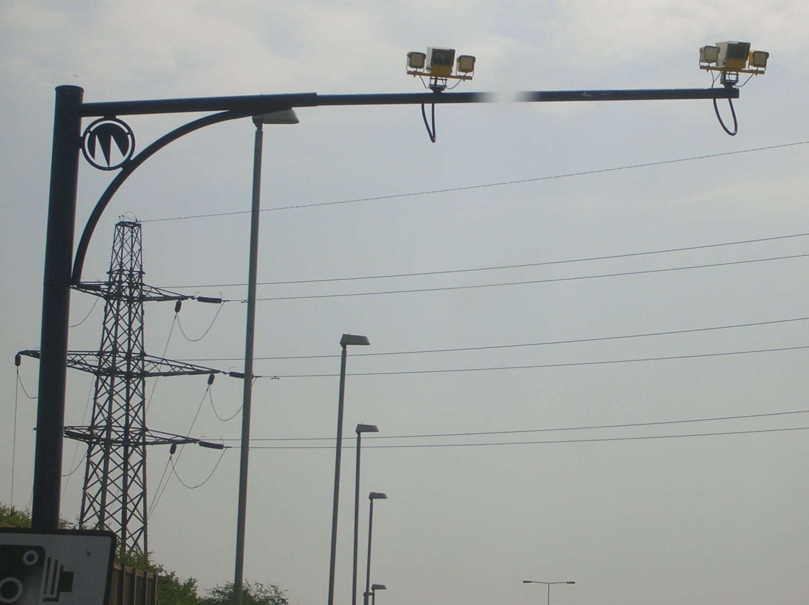
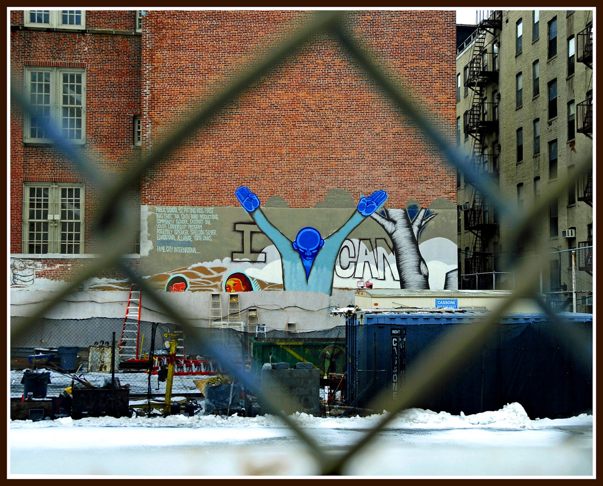

The amount of speed cameras in city school zones may more than double if a new bill proposed by New York State Senator Andrew Gounardes passes. Recently, there were 290 cameras approved by Governor Cuomo in September 2018 and that number can rise to 750 for school zones alone. There are currently around 1,700 speed cameras in New York City.
The length of time would also increase to fund from 6 a.m. to 10 p.m. year round, when school will not be in session for multiple weeks. The radius covered by cameras will also grow to a quarter mile from campus boundaries instead of a quarter mile from the school building, potentially affecting nearby streets not included in the school zone.
This is not the first bill on security in schools proposed by Assembly member Glick, although previous versions of the bill have failed to pass the state Senate. With the Assembly in the control of Democrats and a Republican-controlled Senate in place, it is likely that this bill will pass and allow Gov. Cuomo a chance to step up and approve a life-saving measure. The bill would go into effect 30 days after being signed into law by Governor Cuomo, and would expire July 1, 2022.